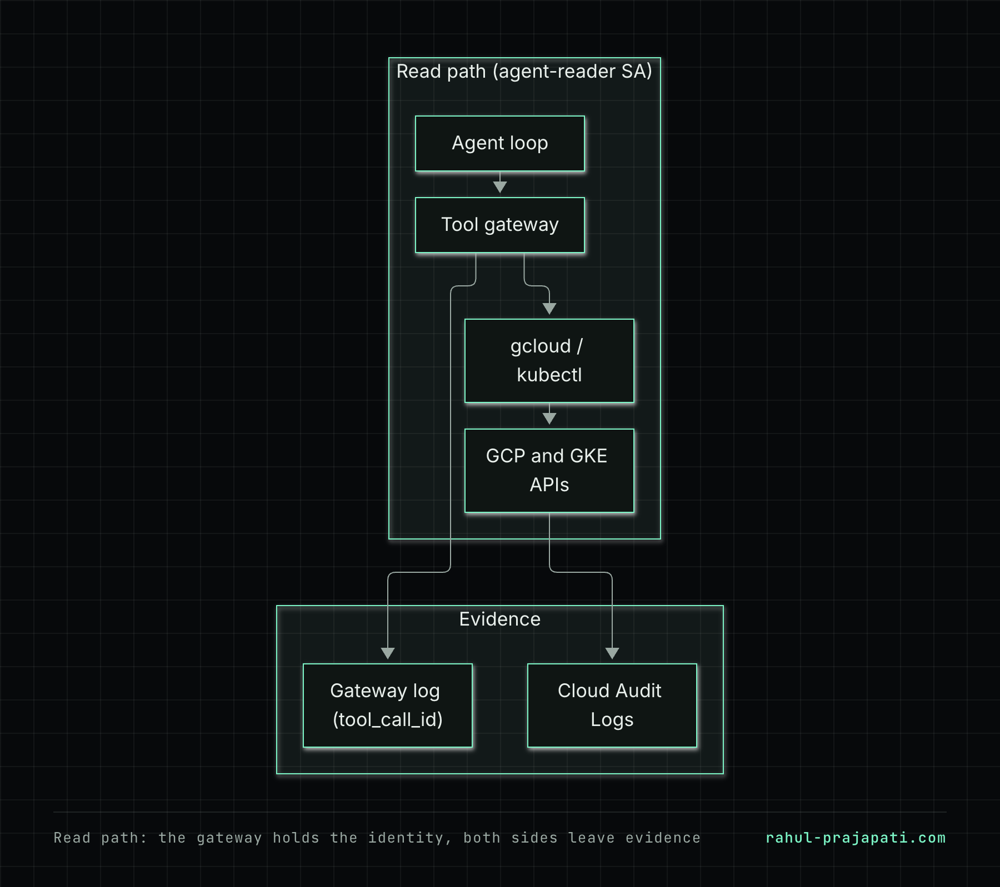
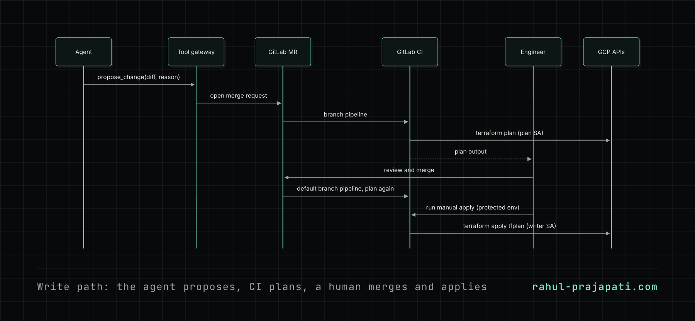

You connect an agent to a shell and ask it why pods in staging are crash-looping. It runs kubectl get pods with whatever kubeconfig is on the machine. Usually that kubeconfig is yours, and you are probably cluster-admin. It answers the question and nothing breaks. But the only thing between that agent and kubectl delete namespace was the model choosing not to type it.
At AirAsia MOVE, the agentic automation I've built covers infrastructure inventory, migration evidence, validation workflows and operational runbooks. Inventory and evidence work is almost all reads. Agents are most useful there, and that's also where people relax too early, because "read-only, plus dry-run by default" sounds safe. It isn't quite, and the usual guides skip three reasons why:
- With a read-only Kubernetes identity,
kubectl apply --dry-run=serverandkubectl diffboth fail. Kubernetes authorizes a dry-run request exactly like the real write. terraform planis not a pure read. It loads the full state, secrets included. It can run arbitrary programs, and by default it takes a lock.- Data Access audit logs are off by default for most Google Cloud services. Until you turn them on, an agent's reads leave no trace.
This post sets up a GCP and GKE agent with those three in mind.
The threat model, in four lines
Before any config, this is what I'm defending against:
- Wrong command. The agent misreads a situation and runs something destructive.
- Injected instructions. Pod logs, ConfigMap values, resource labels and commit messages all end up in the model's context. Any of them can contain text that reads like an instruction. Treat all tool output as untrusted input.
- Reads that leak. Anything the agent reads goes to the model provider and into whatever transcripts you keep. A password in a startup script or in a ConfigMap leaks just like a Secret would.
- Ambient credentials. The agent ends up using credentials it was never meant to have: your user login, a mounted kubeconfig, an over-scoped node service account.
Each control maps to one of these. Identity limits the blast radius. A tool gateway limits which commands are possible. Approval gates sit in front of every write. Audit logs let you prove afterwards what happened.

Prerequisites
- A GCP project where you can change IAM (
PROJECT_ID) and a GKE cluster (my-cluster). - Terraform with the
googleprovider. kindandkubectllocally for the lab. You need kubectl 1.28 or newer forkubectl auth whoami.
1. A read-only identity the agent cannot step out of
The service account
variable "project_id" {
type = string
}
variable "agent_launchers" {
type = list(string)
description = "Principals allowed to impersonate the agent, e.g. group:platform-oncall@example.com"
}
locals {
agent_roles = [
"roles/compute.viewer",
"roles/container.clusterViewer",
"roles/cloudsql.viewer",
"roles/logging.viewer",
"roles/monitoring.viewer",
]
}
resource "google_service_account" "agent_reader" {
project = var.project_id
account_id = "agent-reader"
display_name = "AI agent, read-only"
}
resource "google_project_iam_member" "agent_reader" {
for_each = toset(local.agent_roles)
project = var.project_id
role = each.value
member = "serviceAccount:${google_service_account.agent_reader.email}"
}
resource "google_service_account_iam_member" "launchers" {
for_each = toset(var.agent_launchers)
service_account_id = google_service_account.agent_reader.name
role = "roles/iam.serviceAccountTokenCreator"
member = each.value
}I use narrow predefined roles instead of roles/viewer. Basic Viewer covers almost every service in the project, and you'll forget what it includes the day someone enables a new one. roles/container.clusterViewer is just enough to fetch cluster credentials. RBAC decides what the agent sees inside the cluster, not IAM.
roles/compute.viewer can still read instance metadata, and that includes startup scripts. If anyone on your team ever put a password in a startup script, the agent can now read it. Read-only makes the blast radius smaller. It doesn't make the agent harmless.
Kubernetes RBAC
apiVersion: rbac.authorization.k8s.io/v1
kind: ClusterRoleBinding
metadata:
name: agent-reader-view
subjects:
- kind: User
name: agent-reader@PROJECT_ID.iam.gserviceaccount.com
apiGroup: rbac.authorization.k8s.io
roleRef:
kind: ClusterRole
name: view
apiGroup: rbac.authorization.k8s.ioThe built-in view ClusterRole leaves out Secrets and RBAC objects. It does include ConfigMaps, pod specs and pod logs, and those are exactly where people keep plain-text credentials.
Where the agent runs matters more than the role
Impersonation (gcloud config set auth/impersonate_service_account ...) helps with attribution, because the audit log records the service account and also the human who delegated to it. The launchers binding above is what allows that. But impersonation isn't a boundary if the agent has a shell. Your own credential is still underneath, and one gcloud config unset auth/impersonate_service_account gets the agent back to it.
The setup I prefer is to run the tool gateway somewhere that only holds the agent's identity, like a Cloud Run service or a GKE pod running as agent-reader, with no user credentials on disk. The model calls the gateway through a tool interface and never gets a shell. Before the first real run, check from inside that runtime:
gcloud auth list --filter=status:ACTIVE --format='value(account)'
kubectl auth whoami
kubectl auth can-i --list --namespace default
kubectl auth can-i create deployments --namespace default # expect: no2. A tool gateway instead of a shell
The gateway is a thin wrapper. It takes an argv list, checks it against an allowlist, runs it without a shell and logs one structured record per call. Think of it as a seatbelt. IAM and RBAC are the real boundary, but the gateway catches mistakes early and gives every call an ID.
#!/usr/bin/env python3
"""Run allowlisted read-only commands for an agent and log each call."""
import json
import os
import subprocess
import sys
import time
import uuid
from datetime import datetime, timezone
ALLOWED_PREFIXES = [
["gcloud", "compute", "instances", "list"],
["gcloud", "compute", "instances", "describe"],
["gcloud", "container", "clusters", "list"],
["gcloud", "container", "clusters", "describe"],
["gcloud", "sql", "instances", "list"],
["gcloud", "sql", "instances", "describe"],
["kubectl", "get"],
["kubectl", "describe"],
["kubectl", "logs"],
["kubectl", "top"],
]
# Flags that switch identity, target or load extra flags from elsewhere.
BLOCKED_FLAGS = {
"--impersonate-service-account", "--account", "--configuration",
"--access-token-file", "--flags-file",
"--as", "--as-group", "--as-uid", "--token", "--kubeconfig",
"--server", "-s", "--user", "--context", "--cluster",
}
def check(argv):
if not any(argv[: len(p)] == p for p in ALLOWED_PREFIXES):
return "command not in read allowlist"
for arg in argv:
if arg.split("=", 1)[0] in BLOCKED_FLAGS:
return f"flag {arg.split('=', 1)[0]} is not allowed"
return ""
def run(argv, run_id):
call_id = str(uuid.uuid4())
reason = check(argv)
record = {
"severity": "WARNING" if reason else "INFO",
"message": "agent tool call",
"run_id": run_id,
"tool_call_id": call_id,
"argv": argv,
"decision": "deny" if reason else "allow",
"reason": reason,
"started_at": datetime.now(timezone.utc).isoformat(),
}
if reason:
print(json.dumps(record), file=sys.stderr, flush=True)
return {"tool_call_id": call_id, "error": reason}
t0 = time.monotonic()
proc = subprocess.run(argv, capture_output=True, text=True, timeout=60)
record["exit_code"] = proc.returncode
record["duration_ms"] = int((time.monotonic() - t0) * 1000)
print(json.dumps(record), file=sys.stderr, flush=True)
return {
"tool_call_id": call_id,
"stdout": proc.stdout[-20000:],
"stderr": proc.stderr[-4000:],
}
if __name__ == "__main__":
print(json.dumps(run(sys.argv[1:], os.environ.get("AGENT_RUN_ID", "manual"))))Some of these choices are deliberate. I match exact command prefixes instead of guessing whether a verb is a read, because gcloud has far too many verbs to get that right. --flags-file is blocked because it would let the agent slip in any flag it likes. Without shell=True, a ; in an argument is just text. On Cloud Run and GKE, JSON lines written to stderr arrive in Cloud Logging as a structured jsonPayload, so you can query tool_call_id directly.
3. Dry-run is not free with a read-only identity
Try it yourself on kind
kind create cluster --name agent-lab
kubectl create clusterrolebinding agent-view --clusterrole=view --user=agent
kubectl create secret generic db --from-literal=password=not-a-real-password
kubectl create configmap app-config --from-literal=DB_PASSWORD=not-a-real-password
kubectl get secret db --as=agent # Forbidden
kubectl get configmap app-config -o yaml --as=agent # password in plain text
kubectl create deployment web --image=nginx --dry-run=client -o yaml > web.yaml
kubectl apply -f web.yaml --dry-run=server --as=agent # Forbidden: cannot create deployments
kubectl diff -f web.yaml --as=agent # Forbidden as well
kubectl apply -f web.yaml --dry-run=client --as=agent # "created (dry run)"
kind delete cluster --name agent-labThe server-side dry run fails because Kubernetes authorizes dry-run requests exactly like real ones. RBAC has no separate dry-run verb, so dry-running a create needs create. kubectl diff uses server-side dry run underneath, so it fails the same way. The client-side dry run passes, but the object never reaches the API server's admission chain. That means no webhooks, no policy checks, no quota and no defaulting.
So you have two options. One is to give the agent create/patch RBAC and trust the gateway to always add --dry-run=server. Then the gateway is your only boundary. The other is to accept that the agent can't validate manifests against the cluster and let CI do it. I go with the second, because a wrapper bug shouldn't be one missing flag away from a real write.
Terraform plan is a read with side effects
| Option | What the agent needs | What it can see or do |
|---|---|---|
| Agent edits code, CI plans | Merge request access only | Nothing beyond the repo |
Agent runs terraform plan -lock=false |
Read on resources, roles/storage.objectViewer on the state bucket |
Every value in state, including passwords. Runs any data "external" program |
| Agent runs plan and apply | Writer roles | Everything. Don't |
Marking an output sensitive only hides it in CLI output. The value still sits in plain text in state. And because data "external" runs a program at plan time, an agent that can edit .tf files and also run plan can execute arbitrary code with its own credentials. If you pick the second row anyway, use -lock=false. Plan doesn't write state, and on the GCS backend taking a lock means creating an object in the bucket, which a reader has no business doing.
4. Approval gates for anything that writes
The agent gets one write tool, propose_change. The gateway pushes a branch and opens a merge request with the diff and the agent's reasoning. It does nothing else. Its GitLab token can push branches and open merge requests, and the default branch is protected so that token can't merge. Everything after that runs in CI.

stages: [plan, apply]
.terraform:
image:
name: hashicorp/terraform:1.9
entrypoint: [""]
before_script:
- terraform init -input=false
plan:
extends: .terraform
stage: plan
script:
- terraform plan -input=false -out=tfplan
artifacts:
paths: [tfplan]
expire_in: 1 day
apply:
extends: .terraform
stage: apply
script:
- terraform apply -input=false tfplan
rules:
- if: $CI_COMMIT_BRANCH == $CI_DEFAULT_BRANCH
when: manual
environment: productionApplying the saved tfplan means the change a human approves is exactly the change that gets made. Make production a protected environment (a GitLab Premium feature) so only named people can trigger the manual job.
Here's the part that's easy to miss: use two identities, not one. The plan job runs whatever .tf the merge request contains. If the agent adds a data "external" block, that block runs inside CI. Give branch pipelines a plan service account that can read resources and use the state bucket, and nothing more. Only the apply job on the protected environment should be able to get the writer account. With Workload Identity Federation, GitLab's ID token carries claims such as ref_protected and environment_protected. Map those into attributes and allow only the matching principal set to impersonate the writer account. That way no keys are stored anywhere, and a feature branch can't reach the writer.
Operational writes that aren't in Terraform, like scaling a deployment or restarting a rollout, follow the same rule. The agent writes the exact command into the merge request or ticket, and a person runs it under their own identity.
5. Audit logs that map to a tool call
Admin Activity logs are always on, but they only cover writes and config changes. An agent mostly reads, so turn on Data Access logs for the services it touches:
resource "google_project_iam_audit_config" "agent_reads" {
for_each = toset([
"compute.googleapis.com",
"container.googleapis.com",
"sqladmin.googleapis.com",
])
project = var.project_id
service = each.value
audit_log_config {
log_type = "ADMIN_READ"
}
audit_log_config {
log_type = "DATA_READ"
}
}This resource is authoritative for each service it names, so check for existing audit config before you apply. Data Access logs also cost money at ingestion. That's why I list specific services and don't use allServices.
Correlation takes two steps. First, pull the gateway's records for a run:
gcloud logging read 'jsonPayload.run_id="RUN_ID"' \
--project=PROJECT_ID --freshness=1d \
--format='table(timestamp, jsonPayload.tool_call_id, jsonPayload.decision, jsonPayload.argv)'Then see what the API side recorded for the agent's identity in the same window:
gcloud logging read \
'logName:"cloudaudit.googleapis.com" AND protoPayload.authenticationInfo.principalEmail="agent-reader@PROJECT_ID.iam.gserviceaccount.com"' \
--project=PROJECT_ID --freshness=1d \
--format='table(timestamp, protoPayload.methodName, protoPayload.resourceName)'For gcloud and kubectl, you join on principal plus timestamp. That's good enough when each agent run executes its calls one after another. kubectl calls against GKE show up with k8s.io method names such as io.k8s.core.v1.pods.list. If you chose the second Terraform row, set TF_APPEND_USER_AGENT=agent-call/CALL_ID in the environment when the gateway runs plan. The google provider adds it to its user agent, which shows up in protoPayload.requestMetadata.callerSuppliedUserAgent, so you can filter on that one call.
What to check after rollout
- Run
kubectl auth whoamiandgcloud auth listfrom inside the gateway runtime, not from your laptop. If either shows a human, the boundary isn't where you think it is. - Have the agent try a write through the gateway and also directly against the API. You want a gateway deny in your logs and a 403 in the audit logs. You need both.
- Before you connect the agent, search ConfigMaps, instance metadata and env vars for credentials. The agent can read anything you find there.
- Confirm that one
gcloud compute instances describeand onekubectl get podsboth produce Data Access entries. If the query comes back empty, your audit config didn't take effect. - Re-check the agent service account's roles regularly. The quickest way to break this setup is someone granting it
roles/editor"just for one task". As a backstop, an IAM deny policy on the project can list the agent's service account as a denied principal for specific write permissions, and it holds even after someone grants a broader role.